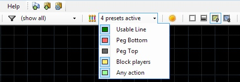

You can create custom linedef color presets to show linedefs with any combination of action, flags and activation using a specified color in 2D modes.
You can choose which presets to apply using the drop down menu on the main toolbar.
While the drop down is opened, hold Shift to toggle several items at once.

Technical notice: color presets are evaluated from top to bottom, so if you have a setup like this:
"Any action" [no flags] [any action] [no activation]
"Slopes" [no flags] [action 181] [no activation]
then the "Slopes" preset will never be used.